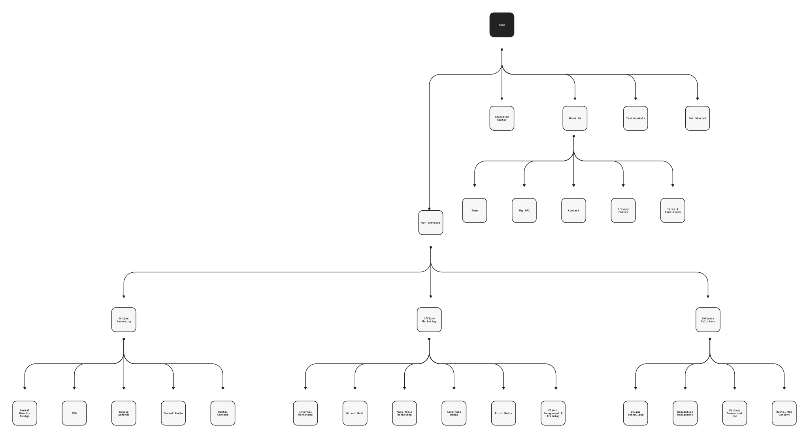
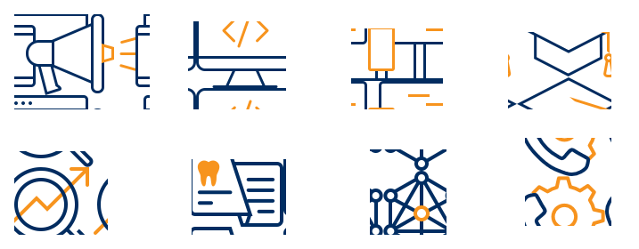
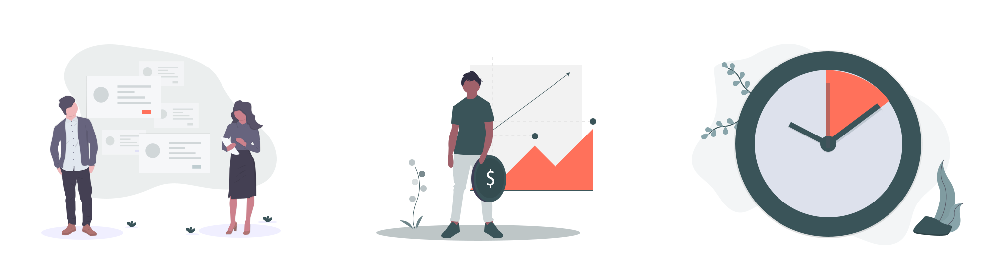
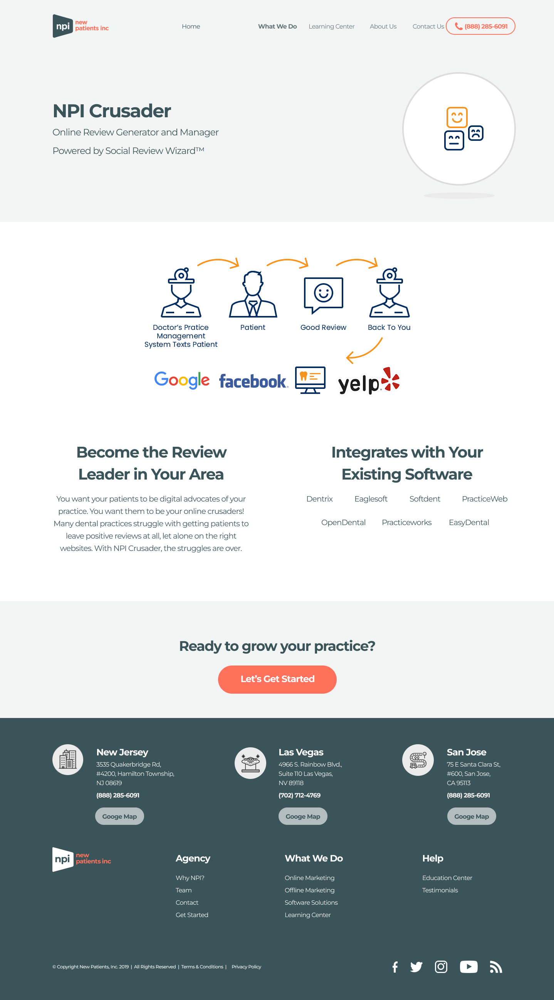
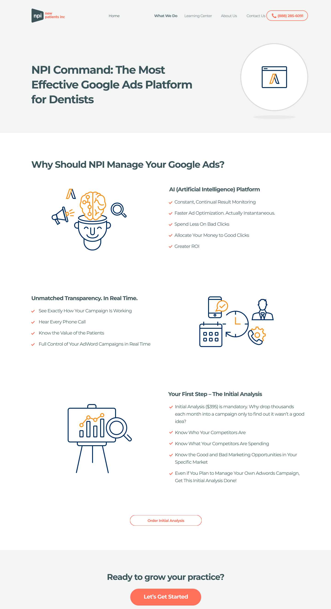
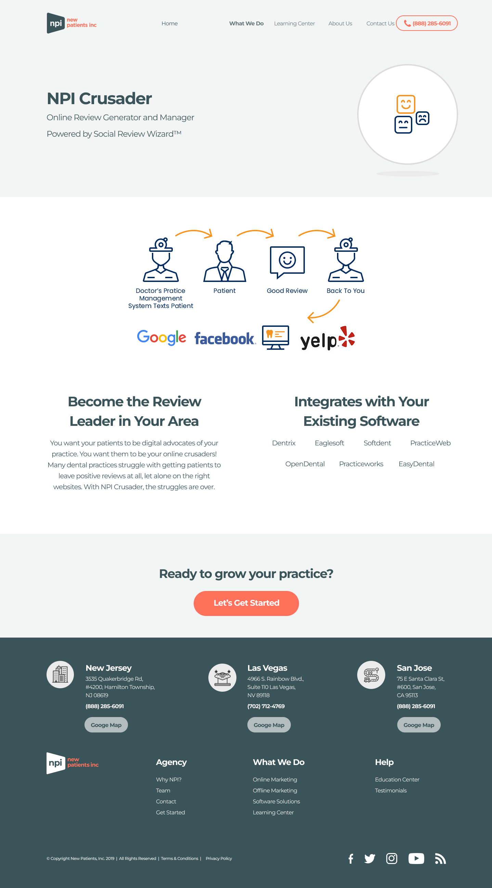
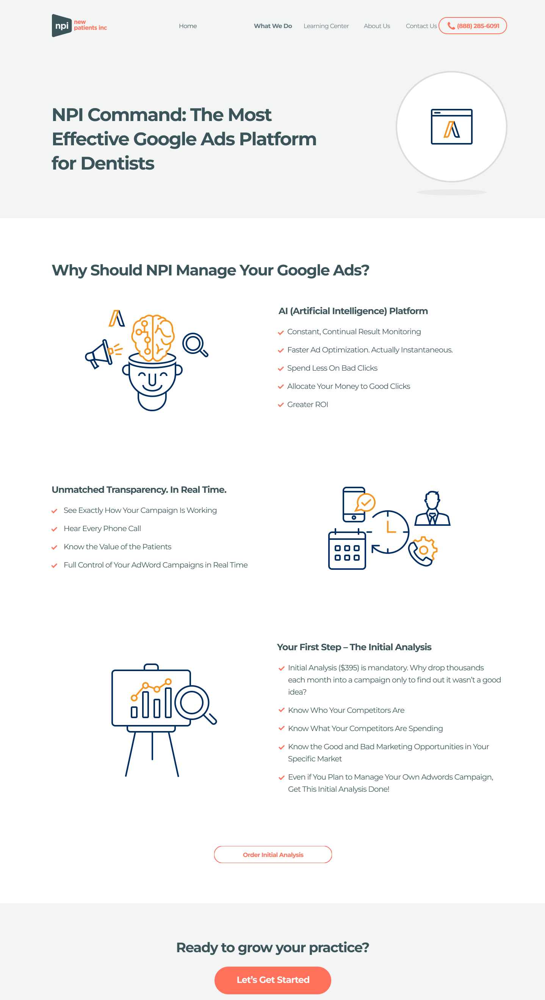

New Patients Inc
About
One of the New Patients Inc (NPI) partners approached me about overhauling their brand and their website. The company did not have an in house design team. They had not updated their brand in years, and it had become stale.
In addition to the website redesign, the partners asked me if I could give their internal graphics design team a crash course in UX design so they could take over maintenance of the branding and the website once I was done.
I was working on the NPI project on the side while working at EZLynx. I had a limited amout of time to work on the project, so I had to work quickly. For the brand, I wanted to start with the logo and logo colors, and then establish the brand around that.
Logo
I wanted the brand to look professional and inviting, so after a lot of research into different color palettes, I settled on a combination of an earthy dark green (professional) and a vibrant orange (inviting).
For the font I used Montserrat, a warm welcoming, humanist font.
The text of the logo is set in a shape that we called the flag. The logo was designed to look like an arrow. By placing the company name to the right, the logo gives the impression of forward motion.
I created multiple versions of the logo, including inverted versions for light backgrounds, black and white versions for print, and logo only version.
Website
To get an idea of the scope of the website redesign, I navigated through the entire website and build a sitemap.
Browsing through all the pages, I realized that I had a huge number of webpages with a lot of content on each page to redesign. I was going to have take advantage of as many shortcuts as possible to get the redesign completed quickly and on time. I contacted the marketing team to see what assets they had that I could use.
Icons
The team had access to a huge library of icons that had a consistent look and feel. I would have to updated the colors to match the new identity, but that would take less time than trying to recreate the dozens of icons on the website from scratch.

Illustrations
Around this time, a graphics designer released a collection of her illustrations for free for both personal and commercial use. There was an incredible variety of scenarios illustrated in her artwork, and they were available in fully editable SVG. I could mix and match the objects and apply the brand colors to create my own custom illustrations for the website.

Web Pages
The website would be developed overseas by an independent developer, with whom I would communicate via email. Based on my past experience working with developers across the world, I knew that I would have to generate precise pixel-perfect mockups, and export out all the assets — icons, illustrations, fonts, content — to ensure the developer coded the site correctly.
I was designing the screens in Sketch. Sketch at the time was known to have performance problems when there were too many objects in a file or on screen. I had to work carefully and quickly to ensure I could deliver the mockups and assets to the developer on time without Sketch crashing and forcing me to redo the process.
Below is a sample of the screens I designed.
 



Crash Course in UX
A few weeks after I completed the branding and website redesign, I flew into Las Vegas to meet the NPI team to give their graphics designers a crash course in user experience design. I compressed the several years of knowledge I had in user research, ideation, usability testing, and validation into six hours of concentrated learning.
Conclusion
New Patients Inc's partners and founders were very happy with the new brand. They continue to use it to this day. The website redesign was one of the biggest design projects I had done at the time and definitely the biggest website project I have worked on to date. And the marketing team was very happy with the UX crash course I gave them, as it was far more comprehensive than what they had expected and could have receievd in a day from any online course.
So, How can I help you?